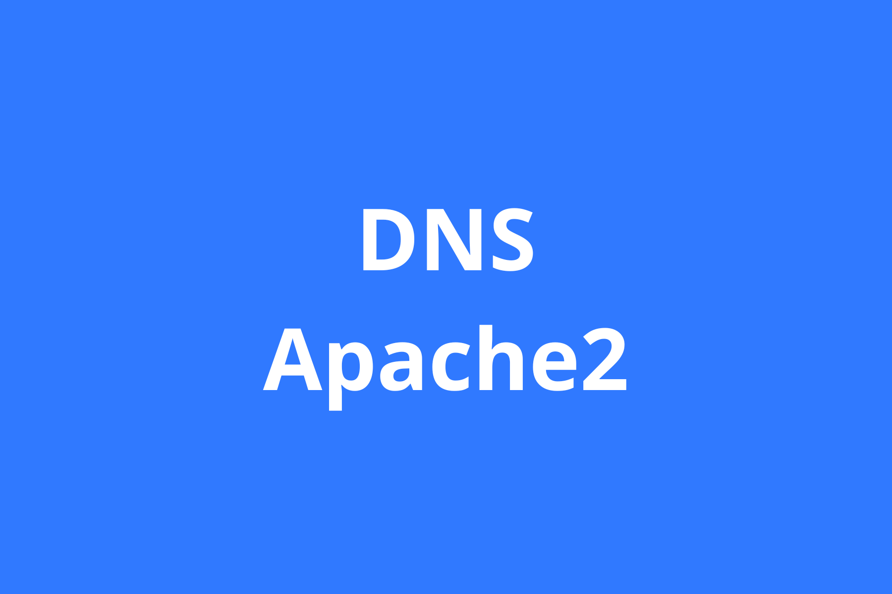
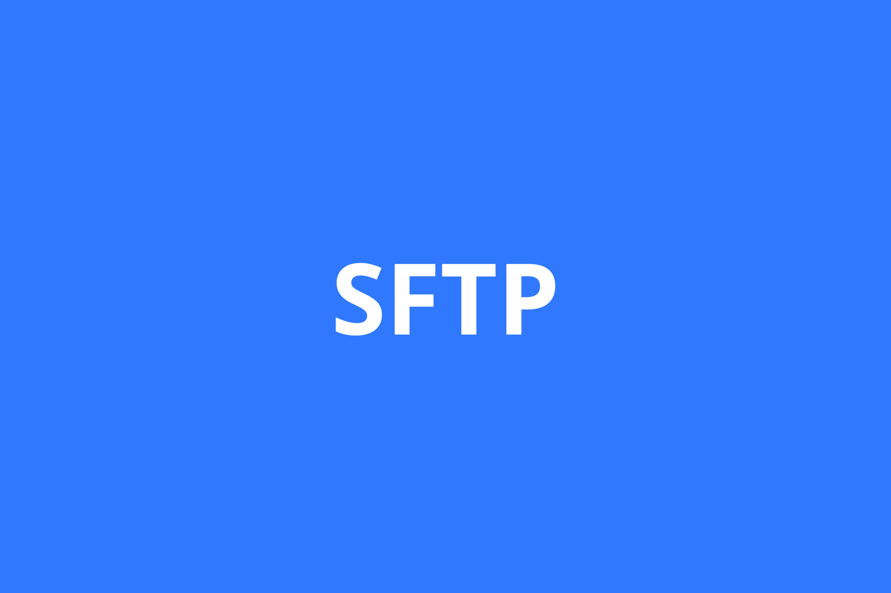
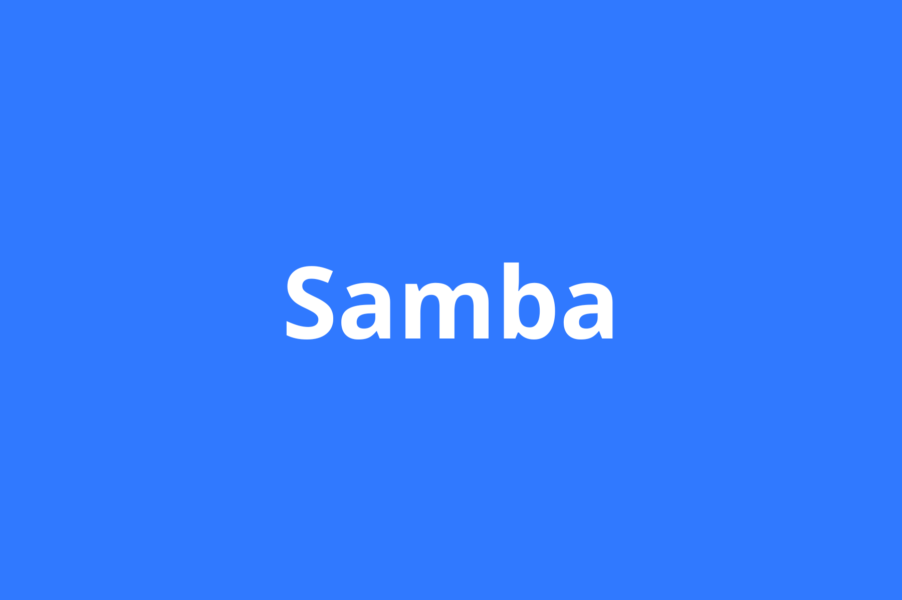
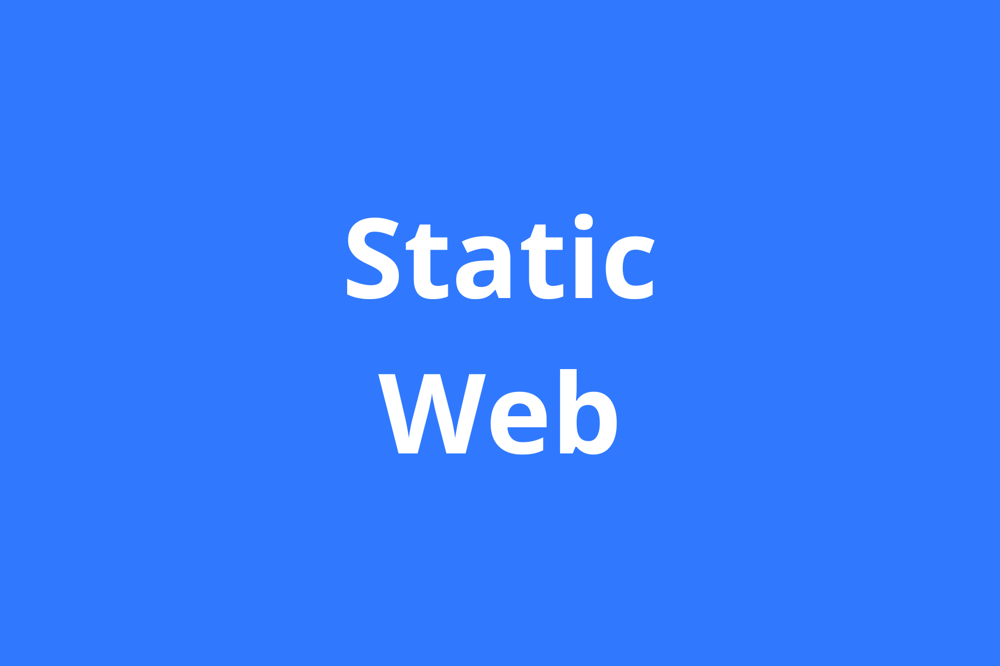
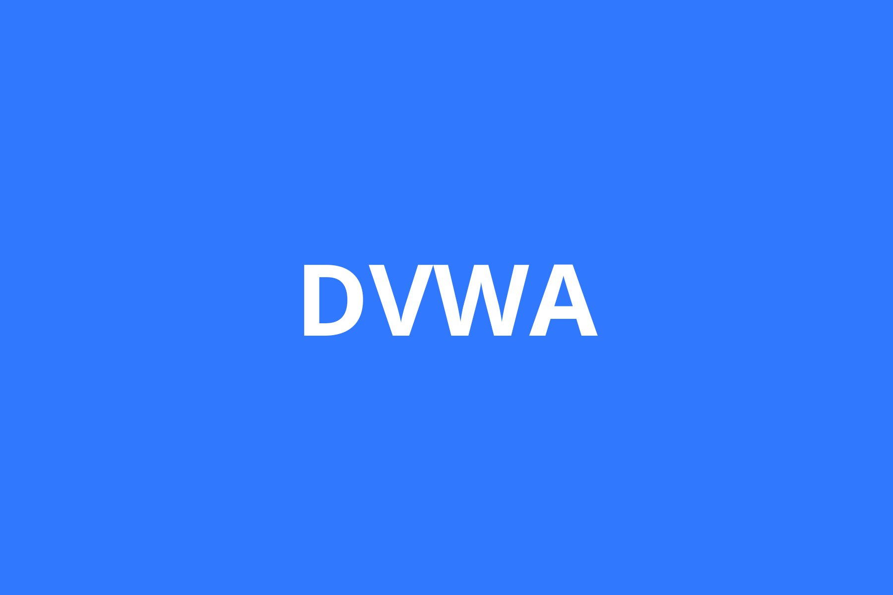

Hai, Saya Rizwan
Selamat Datang di Tutorial Debian11
Selamat Datang di Tutorial Debian11
Network Address Translation (NAT) digunakan untuk mengubah alamat IP pribadi menjadi alamat IP publik dan juga sebaliknya, dari alamat IP publik menjadi alamat IP pribadi. DHCP (Dynamic Host Configuration Protocol) adalah protokol yang berbasis arsitektur client/server yang dipakai untuk memudahkan pengalokasian alamat IP dalam satu jaringan.

DNS adalah server yang bisa melayani permintaan untuk mengetahui sebuah IP address yang digunakan oleh suatu domain. Apache adalah sebuah nama web server yang bertanggung jawab pada request-response HTTP dan logging informasi secara detail (kegunaan dasarnya). Selain itu, Apache juga diartikan sebagai suatu web server yang kompak, modular, mengikuti standar protokol HTTP, dan tentu saja sangat digemari.



